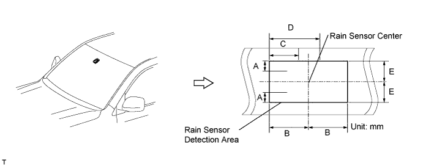

WIPER AND WASHER SYSTEM (w/ Rain Sensor) > OPERATION CHECK |
| AUTOMATIC WIPER OPERATION |

LO operation inspection
Turn the engine switch on (IG), and set the windshield wiper switch to AUTO.
Flatten the end of a cotton swab soaked with water so that it is 4 to 6 mm (0.157 to 0.236 in.) wide.
Wipe the cotton swab in the center of the rain sensor detection area (within the range shown in the illustration), and check that the wiper operates once.
HI operation inspection
Cut 2 or 3 squares out of tissue paper so that they are 25 mm (0.984 in.) long on each side, and soak them with water.
Jack up the vehicle.
Depress the accelerator pedal so that the wheel speed is at 30 km/h (19 mph).
Place the wet tissue paper onto the rain sensor detection area so that the area is completely covered, and check that the wiper operates on HI.